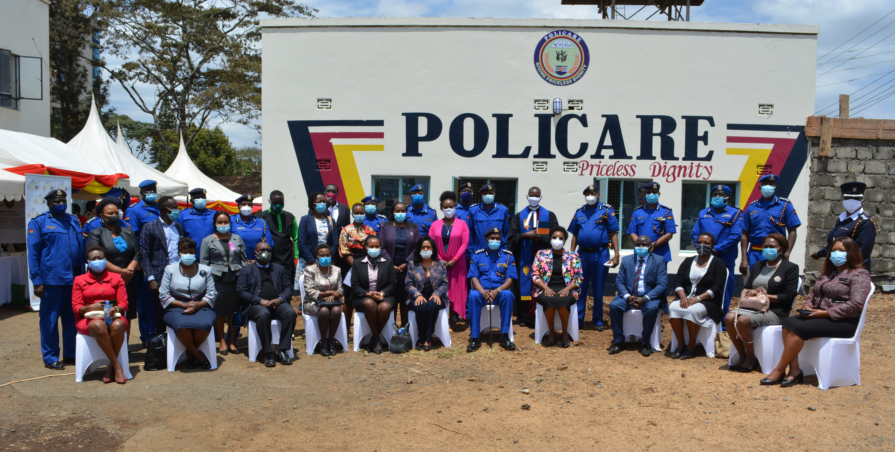

POLICARE
News From Communication Desk
POLICARE has been coined from two English words: “POLICE” and “CARES”. POLICARE is a National Police Service (NPS) integrated response to Sexual and Gender Based Violence (SGBV) in Kenya. It is designed as a multi- agency victim cantered “ONE STOP CENTER” service provider. The service providers will include and not limited to Police, Forensic investigators, Health providers, Psychologists, DPP representative, a Magistrate on call, Medical-legal, Gender experts, Correctional personnel among others under all under one roof.